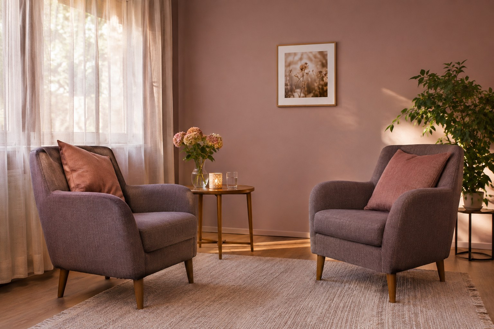

Psychologische Beratung bei beruflichen Umbrüchen
Sie müssen heute noch keine Antwort haben.
Manchmal verändert sich die Arbeit schneller als das eigene Gefühl dazu. Als Psychologin begleite ich Erwachsene, die in vertraulichen Gesprächen sortieren möchten, was sie gerade beschäftigt.
Wie ist das erste Gespräch?
Sie erzählen so viel, wie Sie möchten, und können mir Fragen stellen. Danach entscheiden Sie in Ruhe, ob Sie weitere private Beratungsgespräche vereinbaren möchten.